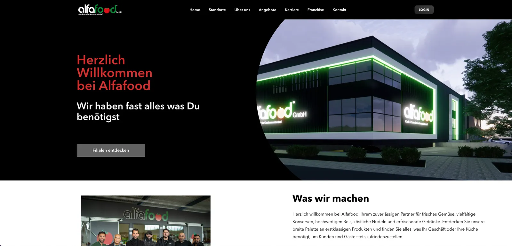

LU-BU Asian Food
Platz 1 bei Google
Eigene Catering-Seite und SEO-Betreuung: Platz 1 der unbezahlten Ergebnisse für „Sushi Catering Nürnberg“.
Fallstudie lesenRestaurants, Caterer und Manufakturen in Nürnberg und Franken: Wir sorgen dafür, dass Gäste dich bei Google finden, und bauen Webseiten, deren Speisekarte und Angebote du selbst aktuell hältst.
Kommt dir bekannt vor? Dann bist du hier richtig.
Wer „Catering Nürnberg“ oder „Restaurant in der Nähe“ sucht, soll dich finden, nicht die Konkurrenz. Mit optimierter Webseite und Google-Unternehmensprofil.
Neue Gerichte, Saisonangebote oder geänderte Öffnungszeiten trägst du selbst ein, in Minuten und ohne Agenturauftrag.
Eigene Seiten für Catering und Feiern, mehrere Standorte und geschützte Bereiche für Franchise-Partner. Anfragen kommen vollständig an.
Platz 1 bei Google
Eigene Catering-Seite und SEO-Betreuung: Platz 1 der unbezahlten Ergebnisse für „Sushi Catering Nürnberg“.
Fallstudie lesen
Sortiment selbst pflegen
Die Pralinen-Manufaktur pflegt Produkte, Texte und FAQ ohne Technikwissen selbst.
Fallstudie lesen
Filialen selbst verwalten
Neue Filialen sind in Minuten online, Franchise-Partner finden Unterlagen im geschützten Bereich.
Fallstudie lesen„Die Erstellung meiner Webseite war ein absoluter Erfolg! Das Team lieferte nicht nur ein ansprechendes Design, sondern ermöglichte mir auch mühelose Selbstpflege.“
Gäste suchen in der Nähe: „Sushi Catering Nürnberg“, „Restaurant Fürth“, „Mittagstisch Erlangen“. Genau diese Suchen entscheiden, ob ein Betrieb neue Gäste gewinnt. Wir optimieren Webseite und Google-Unternehmensprofil gemeinsam, damit beides zusammenspielt.
Wir sitzen in Schnaittach im Nürnberger Land und kommen für das Erstgespräch gern bei dir vorbei. Mehr zum Vorgehen findest du auf der Seite zu SEO & GEO.
Deine Frage ist nicht dabei? Schreib uns einfach.
Technische und inhaltliche Verbesserungen setzen wir direkt um. Wie schnell sich Platzierungen ändern, hängt vom Wettbewerb und davon ab, wann Google die Seite neu bewertet. Bei LU-BU hat eine eigene Catering-Seite mit laufender Betreuung zu Platz 1 der unbezahlten Ergebnisse für „Sushi Catering Nürnberg“ geführt.
Ja, das ist bei uns Standard. Du bekommst eine Oberfläche, mit der du Gerichte, Preise, Bilder und Texte ohne Technikwissen pflegst. dieschokoecke pflegt so das komplette Sortiment selbst.
Plattformen bringen Reichweite, aber du zahlst Provision und hast wenig Einfluss auf die Darstellung. Eine eigene Seite gehört dir, wird bei Google gefunden und bringt Anfragen für Catering, Feiern und Reservierungen ohne Gebühr pro Bestellung.
Für Restaurants ist es oft der wichtigste Kanal. Wir richten es mit dir ein oder optimieren es, abgestimmt auf deine Webseite: Kategorien, Fotos, Öffnungszeiten, Speisekarte und Bewertungen.
Das hängt vom Umfang ab, zum Beispiel ob es eine eigene Catering-Seite, mehrere Standorte oder einen geschützten Bereich für Partner braucht. Nach dem Erstgespräch bekommst du ein Festpreisangebot.
Im Erstgespräch schauen wir auf deine Webseite und deine Sichtbarkeit bei Google – kostenlos und unverbindlich.